Tableau des liaisons normalisées (cinématique)
Document original (PDF professeur) protégé par mot de passe sur le site source — voir la section Sources ci-dessous pour le mot de passe d'accès au site aroux-sii.fr.
1. Torseur cinématique — rappel
Pour deux solides $S_2$ et $S_1$ en liaison, le torseur cinématique de $S_2$ par rapport à $S_1$, exprimé en un point M, s'écrit :
$$\{\mathcal{V}_{S_2/S_1}\}=\left\{\overrightarrow{\Omega_{S_2/S_1}}\ ;\ \overrightarrow{V_{M\in S_2/S_1}}\right\}_M=\left\{\begin{array}{cc}\omega_x&v_x\\\omega_y&v_y\\\omega_z&v_z\end{array}\right\}_{M,(\vec x,\vec y,\vec z)}$$
avec $\overrightarrow{\Omega_{S_2/S_1}}=\omega_x.\vec x+\omega_y.\vec y+\omega_z.\vec z$ et $\overrightarrow{V_{M\in S_2/S_1}}=v_x.\vec x+v_y.\vec y+v_z.\vec z$.
2. Géométries de contact
La géométrie des contacts permet de caractériser la liaison. La zone de contact commune entre deux solides est obtenue par l'association de deux ou plusieurs surfaces. Les surfaces les plus couramment rencontrées (elles correspondent aux surfaces simples à usiner) sont le plan, le cylindre de révolution, la sphère…
3. Tableau des 11 liaisons normalisées
Chaque liaison ci-dessous résulte de l'association de surfaces élémentaires (plan, cylindre, sphère, hélicoïde) en contact. Le nombre de degrés de liberté d'une liaison est égal à 6 moins le nombre de mouvements relatifs supprimés par le contact.
| Surfaces en contact | Nom de la liaison | Schématisation | Degrés de liberté / Torseur cinématique |
|---|---|---|---|
| Plan/Plan | Liaison appui-plan | 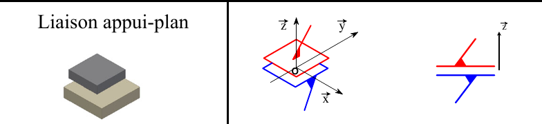 | 2 translations / 1 rotation $\{\mathcal V_{2/1}\}=\underset{\forall M}{\left\{\begin{array}{cc}0&v_x\\0&v_y\\\omega_z&0\end{array}\right\}}_{(\vec x,\vec y,\vec z)}$ |
| Cylindre/plan | Liaison linéaire-rectiligne | 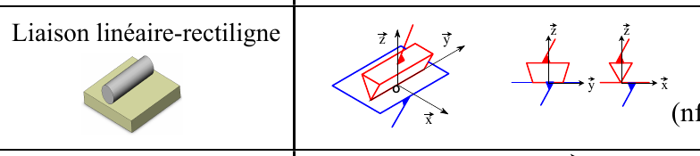 | 2 translations / 2 rotations $\{\mathcal V_{2/1}\}=\underset{\forall M\in(O,\vec y,\vec z)}{\left\{\begin{array}{cc}0&v_x\\\omega_y&v_y\\\omega_z&0\end{array}\right\}}_{(\vec x,\vec y,\vec z)}$ |
| Cylindre/cylindre | Liaison pivot-glissant | 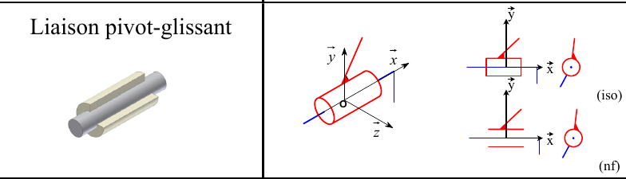 | 1 translation / 1 rotation $\{\mathcal V_{2/1}\}=\underset{\forall M\in(O,\vec x)}{\left\{\begin{array}{cc}\omega_x&v_x\\0&0\\0&0\end{array}\right\}}_{(\vec x,\vec y,\vec z)}$ |
| Sphère/plan | Liaison ponctuelle ou sphère-plan | 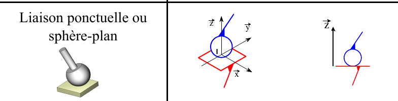 | 2 translations / 3 rotations $\{\mathcal V_{2/1}\}=\underset{\forall M\in(I,\vec z)}{\left\{\begin{array}{cc}\omega_x&v_x\\\omega_y&v_y\\\omega_z&0\end{array}\right\}}_{(\vec x,\vec y,\vec z)}$ |
| Sphère/cylindre | Liaison linéaire-annulaire ou sphère-cylindre | 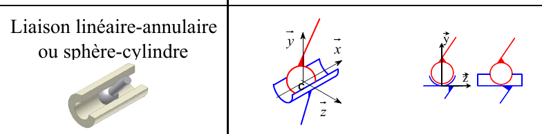 | 1 translation / 3 rotations $\{\mathcal V_{2/1}\}=\underset{C}{\left\{\begin{array}{cc}\omega_x&v_x\\\omega_y&0\\\omega_z&0\end{array}\right\}}_{(\vec x,\vec y,\vec z)}$ |
| Sphère/sphère | Liaison rotule ou sphérique | 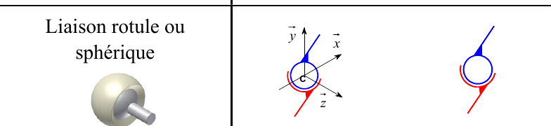 | 0 translation / 3 rotations $\{\mathcal V_{2/1}\}=\underset{C}{\left\{\begin{array}{cc}\omega_x&0\\\omega_y&0\\\omega_z&0\end{array}\right\}}_{(\vec x,\vec y,\vec z)}$ |
| Composée : cylindre/cylindre et plan/plan | Liaison pivot | 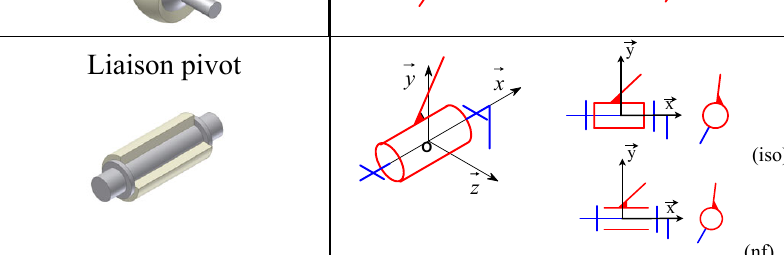 | 0 translation / 1 rotation $\{\mathcal V_{2/1}\}=\underset{\forall M\in(O,\vec x)}{\left\{\begin{array}{cc}\omega_x&0\\0&0\\0&0\end{array}\right\}}_{(\vec x,\vec y,\vec z)}$ |
| Composée : plan/plan et plan/plan | Liaison glissière | 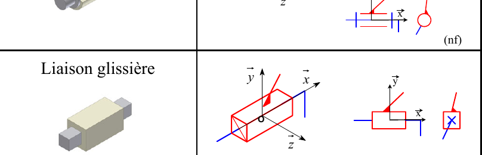 | 1 translation / 0 rotation $\{\mathcal V_{2/1}\}=\underset{\forall M}{\left\{\begin{array}{cc}0&v_x\\0&0\\0&0\end{array}\right\}}_{(\vec x,\vec y,\vec z)}$ |
| Hélicoïde/hélicoïde | Liaison hélicoïdale | 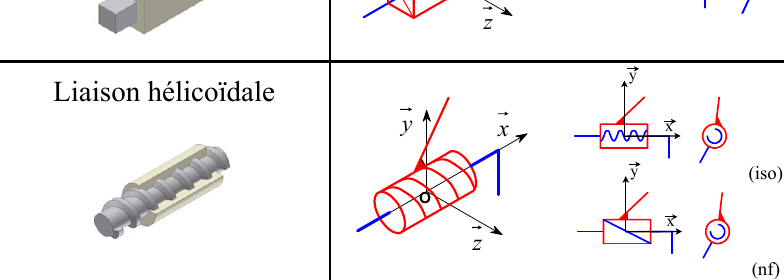 | 1 translation liée à 1 rotation $\{\mathcal V_{2/1}\}=\underset{\forall M\in(O,\vec x)}{\left\{\begin{array}{cc}\omega_x&v_x\\0&0\\0&0\end{array}\right\}}_{(\vec x,\vec y,\vec z)}$ Avec $v_x=\dfrac{p}{2\pi}\omega_x$ |
| Composée : sphère/sphère et cylindre/plan | Liaison sphérique à doigt | 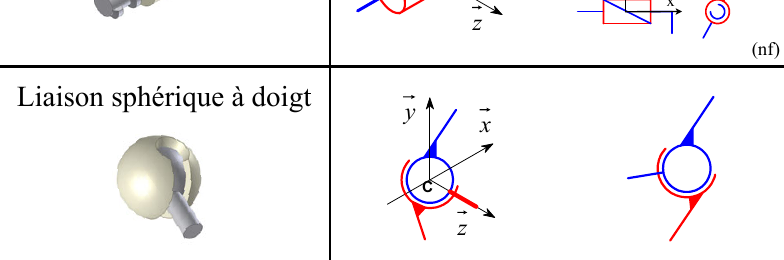 | 0 translation / 2 rotations $\{\mathcal V_{2/1}\}=\underset{C}{\left\{\begin{array}{cc}\omega_x&0\\0&0\\\omega_z&0\end{array}\right\}}_{(\vec x,\vec y,\vec z)}$ |
| Liaison encastrement | 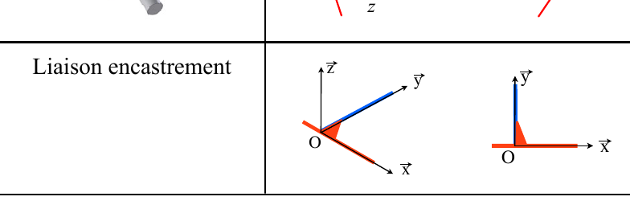 | 0 translation / 0 rotation $\{\mathcal V_{2/1}\}=\underset{\forall M}{\left\{\begin{array}{cc}0&0\\0&0\\0&0\end{array}\right\}}_{(\vec x,\vec y,\vec z)}$ |
Quiz de fin de chapitre
Sources
- « Modélisation cinématique et géométrique des liaisons », Papanicola Robert, Lycée Jacques Amyot, document retrouvé via aroux-sii.fr : aroux-sii.fr (site protégé par mot de passe — mot de passe d'accès :
psi*2627). - Document original (PDF) : 12-2026-09-19_SI_Cours_Tableau-des-liaisons-Cinematique.pdf.
- Norme ISO 3952 (schématisation cinématique des liaisons) ; les 11 liaisons normalisées figurent dans tout manuel de référence de mécanique/SI prépa (ex. H-Prépa Sciences Industrielles).
- Programme officiel de Sciences Industrielles pour l'Ingénieur, CPGE 1re année (filière PCSI) : enseignementsup-recherche.gouv.fr.